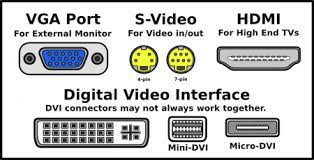
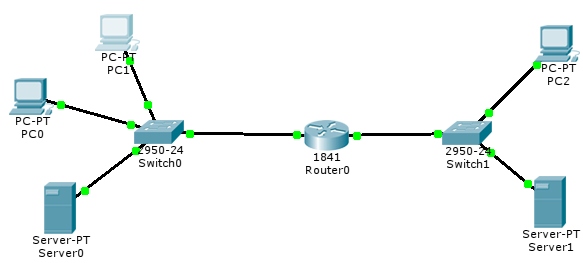
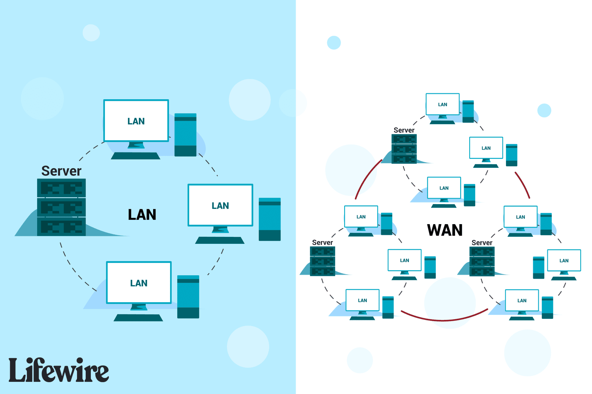

MENHOUR ADEM 222231355503 Informatique (lmd) S5 G2.
1 Réseau (informatique) Network:
Un réseau est un ensemble d'ordinateurs et de périphériques connectés entre eux dans un domaine géographique pour échanger des informations numériques. La mise en réseau implique la connexion d'ordinateurs afin de partager des ressources.
2 Les caractéristiques de base d'un réseau :
Les principales caractéristiques d'un réseau incluent sa topologie physique et logique, le débit de transmission des données, la distance maximale couverte et le nombre de nœuds pouvant être interconnectés.
3 Les caractéristiques de base d'un réseau :
Des termes tels que station de travail, nœud, serveur et paquet sont couramment utilisés en réseau. Les réseaux peuvent être homogènes (même constructeur) ou hétérogènes (divers constructeurs), et le débit mesure la quantité de données transmises par seconde.
4 Éléments d'un réseau :
Les éléments d'un réseau comprennent des ordinateurs avec des cartes de communication, des logiciels tels que les navigateurs et les serveurs, des supports de connexion tels que des câbles et des équipements d'interconnexion tels que les répéteurs, les concentrateurs et les routeurs.
 5 Classification des réseaux :
Les réseaux peuvent être classés en fonction de la portée (LAN, MAN, WAN), de l'ouverture (intranet, extranet, internet), des supports de connexion (filaire, sans fil) et du type d'organisation (peer to peer, client-serveur).
6 Classification des réseaux :
Les réseaux peuvent avoir différentes topologies, telles que le bus, l'étoile, l'anneau et la topologie maillée. Chaque type de topologie a ses propres caractéristiques et méthodes de communication.